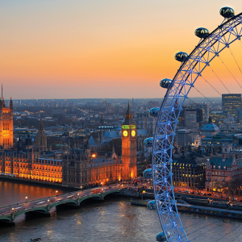
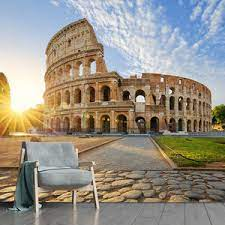
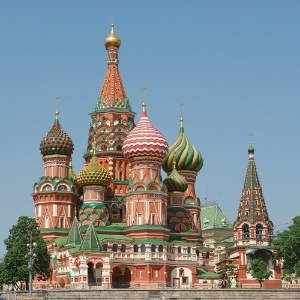

Londres é a capital da Inglaterra e um dos principais destinos turísticos do mundo. A cidade é conhecida por sua história, cultura, arquitetura e pela família real britânica.
Paris é a capital da França e um dos destinos mais românticos do mundo. A cidade é famosa pela Torre Eiffel, Museu do Louvre, Champs-Elysées, entre outros pontos turísticos.

Roma é a capital da Itália e uma das cidades mais antigas do mundo. A cidade é conhecida por sua história, arte, arquitetura e gastronomia. Entre os pontos turísticos mais famosos estão o Coliseu, o Vaticano e a Fontana di Trevi.
Amsterdam é a capital dos Países Baixos e uma cidade muito charmosa. A cidade é conhecida por seus canais, bicicletas, museus e vida noturna agitada.

Moscou é a capital da Rússia e uma das cidades mais importantes do país. A cidade é conhecida por seus monumentos históricos, como o Kremlin e a Catedral de São Basílio, e pela cultura russa.
